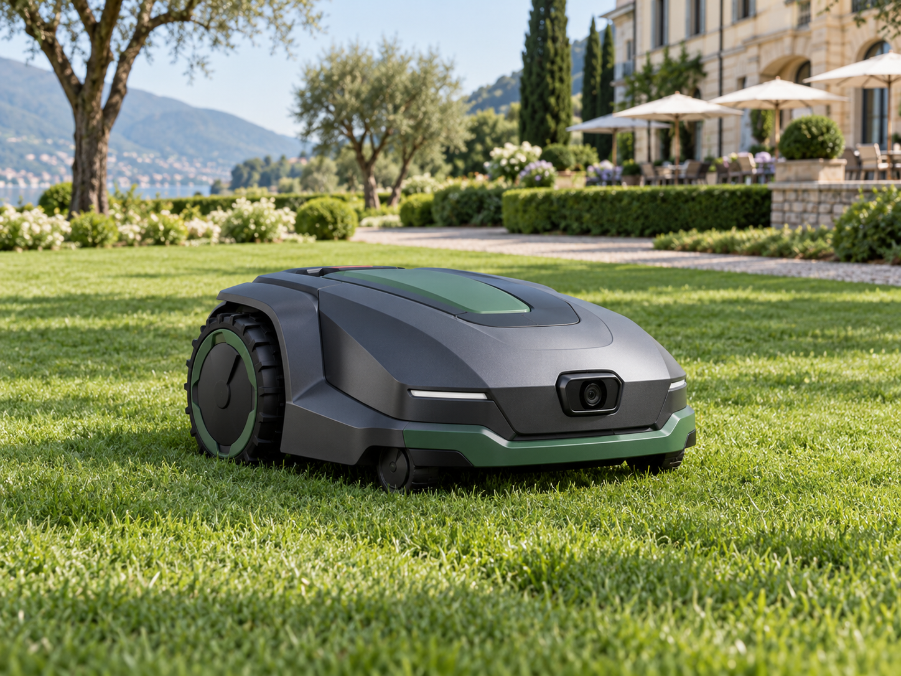

Sunseeker X4 · selected model
360° LiDAR and Vision AI navigation in a compact autonomous mower.
Autonomous mowers for maintained grounds and outdoor spaces. Share details about your site to begin a product discussion.

From the selected X4 to additional Sunseeker models for different lawn sizes and terrain.

360° LiDAR and Vision AI navigation in a compact autonomous mower.
A smaller wireless mower option for compact lawns and multi-zone gardens.
All-wheel drive and advanced navigation for larger lawns and more demanding terrain.
A high-capacity all-wheel-drive option for expansive properties and steeper slopes.
Product photos are representative. Prices are not displayed; model suitability and availability are confirmed for each site.